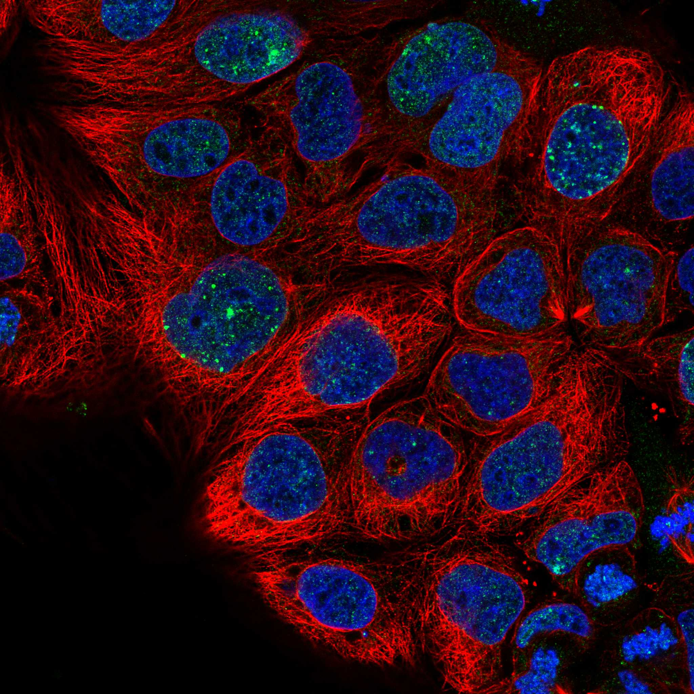
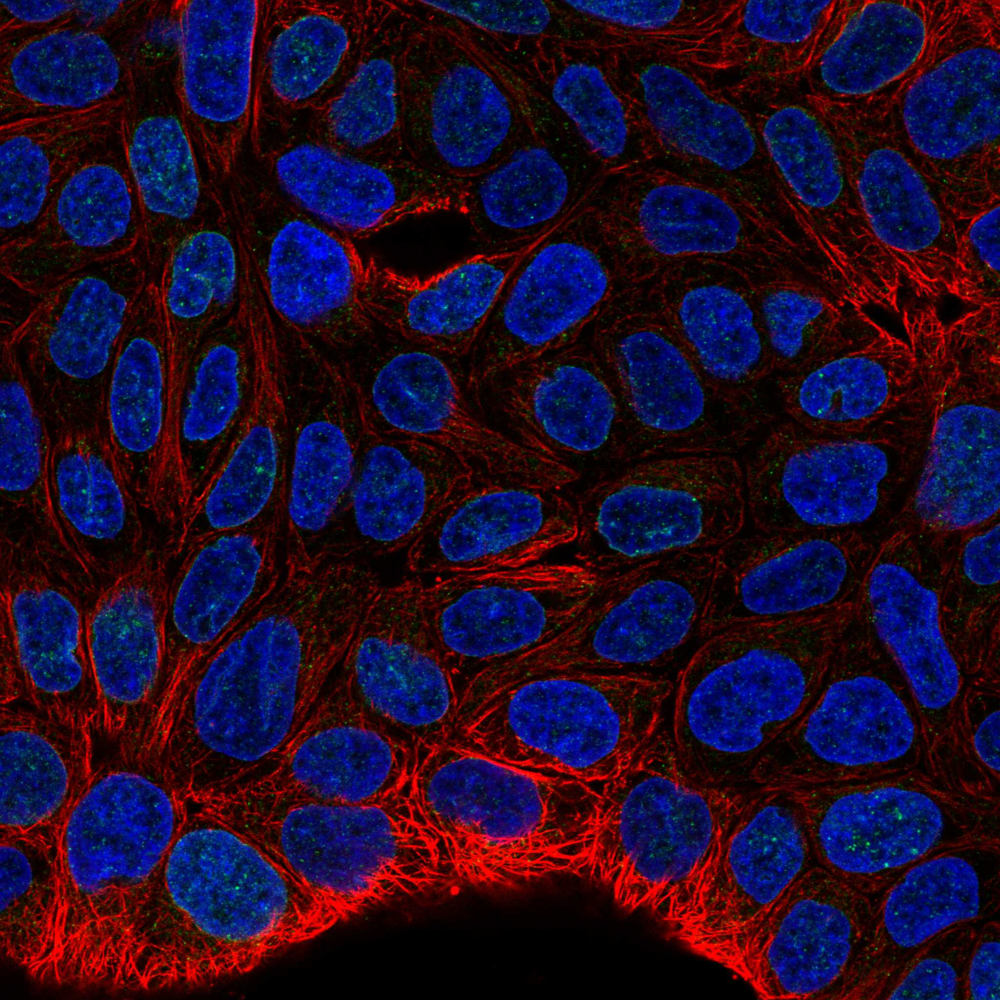

type: protein-evaluation gene: "CACNA1D" date: 2026-06-03 tags: [protein-scout, rejected, evaluation] status: rejected ---
CACNA1D — REJECTED (研究热度过高 (PubMed strict=218，超过100篇阈值))
1. 基本信息
| 项目 | 内容 |
|---|---|
| 基因名 / 别名 | CACNA1D / CACH3, CACN4, CACNL1A2, CCHL1A2 |
| 蛋白名称 | Voltage-dependent L-type calcium channel subunit alpha-1D |
| 蛋白大小 | 2161 aa / 245.1 kDa |
| UniProt ID | Q01668 |
| 评估日期 | 2026-06-03 |
IF 图像:  
2. 评分总览
| 维度 | 得分 | 满分 | 加权后 | 关键证据摘要 |
|---|---|---|---|---|
| 🔴 核定位特异性 | 4/10 | ×4 | 16 | HPA: Nuclear membrane; UniProt: Membrane |
| 📏 蛋白大小 | 2/10 | ×1 | 2 | 2161 aa / 245.1 kDa |
| 🆕 研究新颖性 | 0/10 | ×5 | 0 | PubMed strict=218 篇 (>100→REJECTED) |
| 🏗️ 三维结构 | 6/10 | ×3 | 18 | AlphaFold v6 pLDDT=64.3; PDB: 3LV3, 7UHF, 7UHG, 8E59, 8E5A, 8E5B |
| 🧬 调控结构域 | 7/10 | ×2 | 14 | InterPro: IPR031688, IPR031649, IPR005821, IPR005452, IPR014 |
| 🔗 PPI 网络 | 3/10 | ×3 | 9 | STRING 15 partners; IntAct 15 interactions |
| ➕ 互证加分 | — | max +3 | 2.5 | PDB+AF+STRING+IntAct cross-validation |
| 原始总分 | 61.5/180 | |||
| 归一化总分 | 34.2/100 |
3. 详细分析
3.1 核定位证据
| 来源 | 定位 | 可信度 |
|---|---|---|
| Protein Atlas (IF) | Nuclear membrane | Approved |
| UniProt | Membrane | Swiss-Prot/TrEMBL |
IF 图像获取: IF图像已下载并嵌入 (2张)
GO Cellular Component:
- L-type voltage-gated calcium channel complex (GO:1990454)
- plasma membrane (GO:0005886)
- voltage-gated calcium channel complex (GO:0005891)
- Z disc (GO:0030018)
结论: 核定位信号较弱，多个数据源显示混合定位或非核偏好。
3.2 蛋白大小评估
评价: 大小偏离理想范围，实验设计需特殊考虑。
3.3 研究现状
| 指标 | 数值 |
|---|---|
| PubMed strict count | 218 |
| PubMed broad count | 687 |
| 别名(未计入scoring) | Aliases observed but not used for scoring: CACH3, CACN4, CACNL1A2, CCHL1A2 |
关键文献: 1. Autophagy in the physiological endometrium and cancer.. *Autophagy*. PMID: 32401642 2. Proteogenomic characterization of non-functional pancreatic neuroendocrine tumors unravels clinically relevant subgroups.. *Cancer cell*. PMID: 40185092 3. A Review of the CACNA Gene Family: Its Role in Neurological Disorders.. *Diseases (Basel, Switzerland)*. PMID: 38785745 4. Calcium channelopathies and intellectual disability: a systematic review.. *Orphanet journal of rare diseases*. PMID: 33985586 5. Human Genetics of Ventricular Septal Defect.. *Advances in experimental medicine and biology*. PMID: 38884729
评价: 有一定研究基础，但仍存在niche空间。
3.4 三维结构分析
| 指标 | 数值 |
|---|---|
| AlphaFold 版本 | v6 |
| AlphaFold 平均 pLDDT | 64.3 |
| 高置信度残基 (pLDDT>90) 占比 | 11.6% |
| 置信残基 (pLDDT 70-90) 占比 | 44.6% |
| 中等置信 (pLDDT 50-70) 占比 | 10.6% |
| 低置信 (pLDDT<50) 占比 | 33.2% |
| 有序区域 (pLDDT>70) 占比 | 56.2% |
| 可用 PDB 条目 | 3LV3, 7UHF, 7UHG, 8E59, 8E5A, 8E5B |
PAE: PAE 图像未生成本地文件，结构判断基于 AlphaFold pLDDT 统计。
评价: AlphaFold 预测质量有限（pLDDT=64.3），有序残基占 56.2%。
3.5 结构域分析
| 来源 | 结构域 |
|---|---|
| InterPro/Pfam | InterPro: IPR031688, IPR031649, IPR005821, IPR005452, IPR014873; Pfam: PF08763, PF16885, PF16905 |
染色质调控潜力分析: 存在已知结构域注释，可作为功能研究的结构基础。
3.6 PPI 网络
STRING 预测互作 (combined score >0.4):
| Partner | Combined Score | Experimental | 功能类别 |
|---|---|---|---|
| CACNA2D1 | 0.999 | 0.949 | — |
| CACNB3 | 0.997 | 0.938 | — |
| CACNB2 | 0.997 | 0.811 | — |
| CACNG1 | 0.995 | 0.742 | — |
| CACNB1 | 0.990 | 0.753 | — |
| CALML5 | 0.990 | 0.423 | — |
| CALML3 | 0.990 | 0.423 | — |
| CALM3 | 0.990 | 0.423 | — |
| CACNG4 | 0.986 | 0.000 | — |
| CALML4 | 0.985 | 0.136 | — |
实验验证互作 (IntAct):
| Partner | 方法 | PMID | |
|---|---|---|---|
| Cacnb4 | psi-mi:"MI:0006"(anti bait coimmunoprecipitation) | pubmed:19022416 | imex:IM-16994 |
| URS00000A07C1_10090 | psi-mi:"MI:0096"(pull down) | pubmed:29867223 | imex:IM-24989 |
| BRK1 | psi-mi:"MI:0096"(pull down) | imex:IM-22201 | pubmed:24439376 |
| PDZD2 | psi-mi:"MI:2437"(holdup assay) | doi:10.1038/s41467-022-33018-0 | |
| LIN7B | psi-mi:"MI:2437"(holdup assay) | doi:10.1038/s41467-022-33018-0 | |
| LNX2 | psi-mi:"MI:2437"(holdup assay) | doi:10.1038/s41467-022-33018-0 | |
| ARHGEF12 | psi-mi:"MI:2437"(holdup assay) | doi:10.1038/s41467-022-33018-0 | |
| ARHGEF11 | psi-mi:"MI:2437"(holdup assay) | doi:10.1038/s41467-022-33018-0 | |
| HTRA1 | psi-mi:"MI:2437"(holdup assay) | doi:10.1038/s41467-022-33018-0 | |
| LIN7C | psi-mi:"MI:2437"(holdup assay) | doi:10.1038/s41467-022-33018-0 |
PPI 互证分析:
- STRING + IntAct 均有数据
- STRING partners: 15，IntAct interactions: 15
- 调控相关比例: 0 / 15 = 0%
评价: STRING 15 个预测互作，IntAct 15 个实验互作。调控相关配体占比 0%。
3.7 多库互证
| 维度 | 来源 | 结果 | 是否一致 |
|---|---|---|---|
| 三维结构 | AlphaFold pLDDT=64.3 + PDB: 3LV3, 7UHF, 7UHG, 8E59, 8E5A, | pLDDT=64.3, v6 | 预测+实验 |
| 定位 | UniProt + HPA | Membrane / Nuclear membrane | 一致 |
| PPI | STRING + IntAct | 15 + 15 interactions | 数据充分 |
互证加分明细:
- PDB + AlphaFold 双源验证: +0.5
- 多库定位一致 (3源): +0.5
- STRING + IntAct 双源验证: +0.5
- 结构域 + AlphaFold 质量: +0
- PDB 多条目覆盖 (≥3): +1.0
总分: +2.5 / max +3
4. 总体评价
推荐等级: ⭐⭐ (REJECTED)
核心优势: 1. CACNA1D — Voltage-dependent L-type calcium channel subunit alpha-1D，有一定研究基础，但仍存在niche空间。 2. 蛋白大小2161 aa，大小偏离理想范围，实验设计需特殊考虑。
风险/不确定性: 1. PubMed 218 篇，研究热度过高（>100），不符合新颖性要求 2. AlphaFold 预测质量一般（pLDDT=64.3），需要更多实验结构验证
下一步建议:
- [ ] 查阅最新关键文献补充研究背景
- [ ] 获取 Protein Atlas IF 图像确认亚细胞定位
- [ ] 设计体外实验验证核定位及潜在调控功能
该蛋白PubMed文献数 218 > 100，研究热度过高，不符合novelty筛选标准。
5. 数据来源
- UniProt: https://www.uniprot.org/uniprotkb/Q01668
- Protein Atlas: https://www.proteinatlas.org/ENSG00000157388-CACNA1D/subcellular
- PubMed: https://pubmed.ncbi.nlm.nih.gov/?term=CACNA1D
- AlphaFold: https://alphafold.ebi.ac.uk/entry/Q01668
- STRING: https://string-db.org/network/9606.ENSP00000
- Packet data timestamp: 2026-06-03 04:28:58